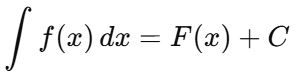
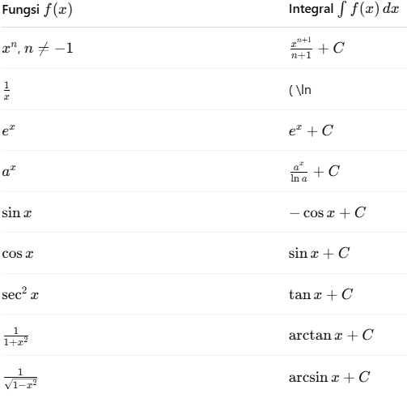
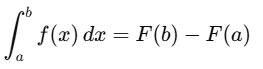
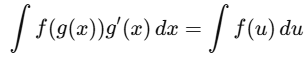
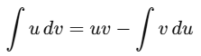
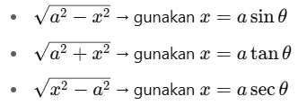

-
Pengertian Integral
Integral adalah konsep kebalikan dari turunan. Integral digunakan untuk menghitung luas di bawah kurva, volume, dan total perubahan suatu fungsi dalam interval tertentu. Terdapat dua jenis integral:-
Integral tak tentu (Indefinite Integral)
-
Integral tentu (Definite Integral)
-
Integral Tak Tentu
-
Definisi
Integral tak tentu dari fungsi 𝑓(𝑥) adalah himpunan semua fungsi primitif (antiturunan) dari f(x), dituliskan:Di mana:
-
F(x): fungsi primitif dari 𝑓 ( 𝑥 )
-
𝐶 C: konstanta integrasi
-
-
Aturan Dasar Integral
 -
Sifat-Sifat Integral Tak Tentu
-
∫[𝑓(𝑥)+𝑔(𝑥)]𝑑𝑥 = ∫𝑓(𝑥)𝑑𝑥 + ∫𝑔(𝑥)𝑑𝑥
-
∫𝑐𝑓(𝑥)𝑑𝑥 = 𝑐 ∫𝑓(𝑥)𝑑𝑥 , di mana 𝑐 adalah konstanta
-
Integral Tentu
-
Definisi
Integral tentu dari fungsi 𝑓(𝑥) pada interval [𝑎,𝑏] adalah:
Di mana 𝐹(𝑥) adalah antiturunan dari 𝑓(𝑥).
-
Interpretasi Geometris
Integral tentu menyatakan luas bersih di bawah kurva 𝑓(𝑥) dari 𝑥 = 𝑎 hingga 𝑥 = 𝑏. Jika 𝑓(𝑥) < 0, maka hasil integral bernilai negatif.
-
Substitusi (U-Substitution)
Digunakan untuk fungsi majemuk:
 -
Parsial (Integration by Parts)
 -
Pecahan Parsial (Partial Fractions)
Digunakan untuk fungsi rasional:

-
Substitusi Trigonometri
